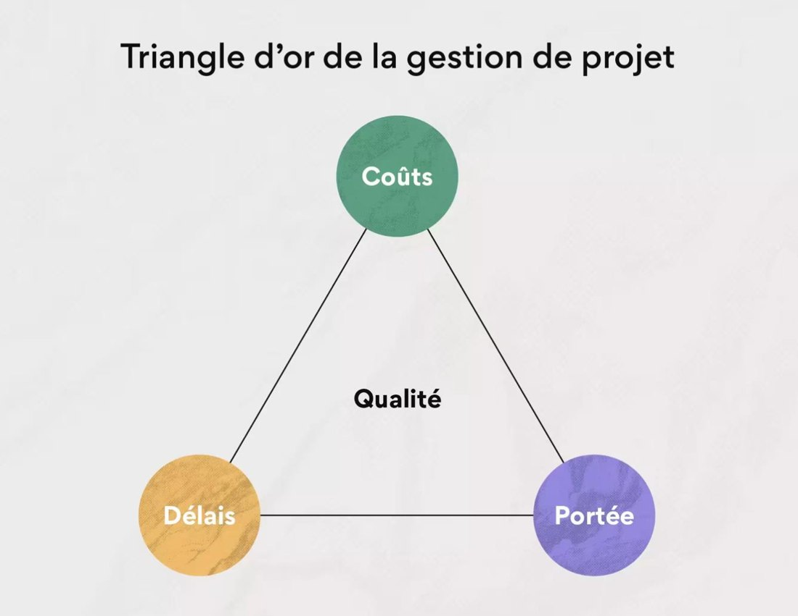
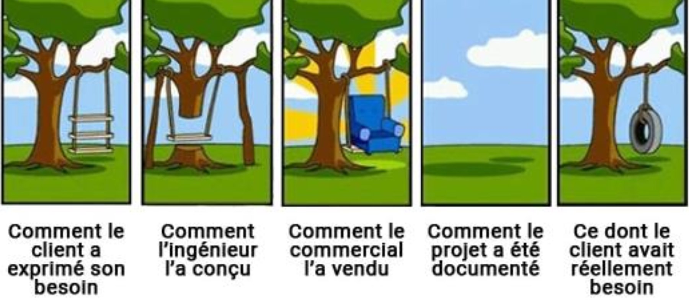
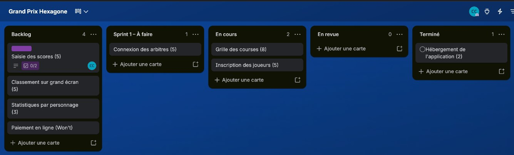

Le bureau des étudiants organise un tournoi Mario Kart. Il veut une application web pour :
Un projet répond à un besoin avec :
| Notion | Définition | Pour le tournoi |
|---|---|---|
| Objectif | Ce que le projet doit permettre, mesurable et daté | Inscrire 64 joueurs avant le 1er octobre |
| Livrable | Un résultat concret remis au client | L'application en ligne |
| Jalon | Une date clé où l'on vérifie une étape | Maquettes validées le 15 septembre |

MOA et MOE viennent du bâtiment : le maître d'ouvrage commande la maison, le maître d'œuvre la construit.

Recette : phase où le client teste le livrable et l'accepte (ou non).
| QQOQCCP | Ce qu'on cherche | Pour le tournoi |
|---|---|---|
| Quoi ? | Le produit attendu | Une application web d'inscription et de scores |
| Qui ? | Le client, les utilisateurs | Bureau des étudiants, joueurs, arbitres |
| Où ? | Le lieu, le support | Sur téléphone, dans la salle du tournoi |
| Quand ? | Les échéances | En ligne une semaine avant le tournoi |
| Comment ? | Les moyens, les contraintes | Gratuit, hébergé par l'école |
| Combien ? | Le budget, les quantités | 0 €, 64 joueurs |
| Pourquoi ? | La raison d'être | Fini les tableaux papier illisibles |
On découpe un gros objectif en tâches de quelques heures ou de quelques jours.
On additionne les estimations en jours-homme, puis on multiplie par le coût d'une journée.
15 jours-homme × 350 € = 5 250 €
Jour-homme : le travail d'une personne pendant une journée. Taux journalier : le prix d'une journée de travail.
Chaque semaine, le chef de projet fait un point d'étape au client :
On parle aussi de reporting.
Les étapes du cycle de vie s'enchaînent dans un ordre fixe. On ne passe à la suivante qu'une fois la précédente validée.
À chaque étape de conception correspond une étape de vérification.
Spécifications fonctionnelles : ce que le logiciel doit faire, fonction par fonction. Tests fonctionnels : on vérifie chacune de ces fonctions. Tests unitaires : on vérifie chaque petit morceau du programme.
Face à ces limites, dix-sept développeurs écrivent le Manifeste agile et ses quatre valeurs :
| Nous valorisons davantage… | … que |
|---|---|
| Les individus et leurs interactions | les processus et les outils |
| Des logiciels opérationnels | une documentation exhaustive |
| La collaboration avec les clients | la négociation contractuelle |
| L'adaptation au changement | le suivi d'un plan |
| Aspect | Cascade, cycle en V | Agile |
|---|---|---|
| Besoin | Figé au départ | Précisé au fil du projet |
| Livraison | Une seule, à la fin | Par petits morceaux utilisables, toutes les 1 à 4 semaines |
| Changement | Coûteux, à éviter | Attendu, intégré au plan |
| Idéal pour | Exigences stables | Besoin incertain |
Scrum est la méthode agile la plus répandue. Le travail avance par sprints de 1 à 4 semaines.
Backlog : liste de travail. Sprint : cycle court de travail.
Chaque élément du backlog s'écrit du point de vue de l'utilisateur :
Critères d'acceptation : comment savoir que c'est terminé.
User story : « récit utilisateur ».
| Priorité | Signification | Pour le tournoi |
|---|---|---|
| Must doit | Indispensable | Inscription, grille, scores |
| Should devrait | Importante, mais peut attendre | Classement sur grand écran |
| Could pourrait | Un plus, si on a le temps | Statistiques par personnage |
| Won't pas cette fois | Écartée pour cette version | Paiement en ligne |
Tout ce que le produit pourrait contenir
Ce qui est choisi pour le sprint
Le produit utilisable en fin de sprint
Artefact : un élément produit et partagé par l'équipe.
| Événement | Ce qu'on y fait | Durée max. (sprint de 2 semaines) |
|---|---|---|
| Sprint planning | Choisir les stories du sprint | 4 h |
| Daily | Hier, aujourd'hui, ce qui bloque | 15 min |
| Sprint review | Montrer le résultat au client | 2 h |
| Rétrospective | Améliorer notre façon de travailler | 1 h 30 |
| Qui | Hier | Aujourd'hui | Blocage |
|---|---|---|---|
| Manon | Maquette d'inscription | Maquette de la grille | Aucun |
| Cosmo | Formulaire d'inscription | Enregistrement des joueurs | J'attends les règles du tournoi |
| Chris | Hébergement (terminé) | J'aide Cosmo sur l'inscription | Aucun |
Un tableau par projet, une liste par colonne, une carte par user story. Chacun déplace ses cartes au fil de l'eau : le tableau montre la réalité.

Trello est gratuit pour une petite équipe. Outils courants en entreprise : Jira, Notion ou OpenProject, libre et hébergeable soi-même.
Grand Prix HexagoneBacklog, Sprint 1 – À faire, En cours, En revue, TerminéSaisie des scores (5). Description : En tant qu'arbitre, je veux saisir le résultat d'une course depuis mon téléphone afin de mettre à jour le classement sans attendre.MustJe choisis la course et la position de chaque joueur puis Le classement se met à jour en moins de 10 secondesBacklog à En coursEn fin de sprint, l'équipe regarde sa façon de travailler, pas le produit. Chacun répond à trois questions :
« Faire le daily à heure fixe »
« Oublier de déplacer nos cartes »
« Faire relire chaque maquette »